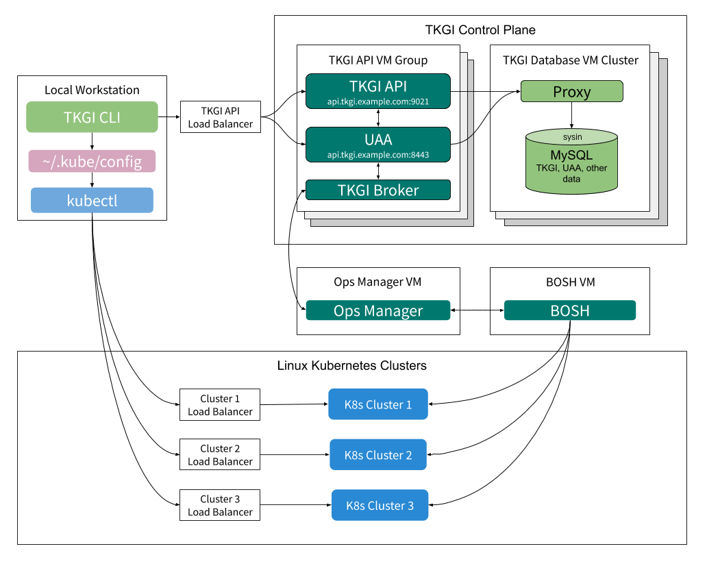

请访问原文链接：VMware Tanzu Kubernetes Grid Integrated Edition (TKGI) 1.21 - 运营商 Kubernetes 解决方案 查看最新版。原创作品，转载请保留出处。
作者主页：sysin.org
VMware Tanzu Kubernetes Grid Integrated Edition (TKGI) 使运营商能够使用 BOSH 和 Ops Manager 配置、运营和管理企业级 Kubernetes 集群。
VMware Tanzu Kubernetes Grid Integrated Edition（以前称为 VMware Enterprise PKS）是基于 Kubernetes 的容器解决方案，具有高级网络、私有容器注册表和生命周期管理功能。
概述
Tanzu Kubernetes Grid Integrated Edition 将 Kubernetes 部署到 BOSH和 Ops Manager，并使用 On-Demand Broker动态地在本地或公共云上实例化、部署和管理高度可用的 Kubernetes 集群。
运营商安装TKGI后，开发人员可以使用 TKGI 命令行界面 (TKGI CLI) 来配置 Kubernetes 集群 (sysin)，并使用 Kubernetes CLI 在集群上运行基于容器的工作负载 kubectl。
操作员将 TKGI 作为磁贴安装在 Ops Manager 安装仪表板上，或从 vSphere 上的 TKGI 管理控制台。
您可以独立运行 TKGI 或与适用于 VM 的 VMware Tanzu 应用程序服务一起运行在运维管理器上。
架构概览
Tanzu Kubernetes Grid Integrated Edition 环境包含一个 TKGI 控制平面以及一个或多个工作负载集群。
Tanzu Kubernetes Grid Integrated Edition 管理员使用 TKGI Control Plane 部署和管理 Kubernetes 集群。工作负载集群运行开发人员推送的应用程序。
下面举例说明 Tanzu Kubernetes Grid 集成版组件之间的交互：

管理员访问 TKGI 控制平面 通过安装在其本地工作站上的 TKGI 命令行界面 (TKGI CLI)。
在 TKGI 控制平面内，TKGI API 和 TKGI Broker 使用 BOSH 来执行请求的集群管理功能 (sysin)。有关 TKGI 控制平面的信息，请参阅下面的 TKGI 控制平面概述。有关安装 TKGI CLI 的说明，请参阅 安装 TKGI CLI。
Kubernetes 在 Kubernetes 集群上部署和管理工作负载。管理员使用 Kubernetes CLI，kubectl, 指导 Kubernetes 从他们的本地工作站。有关信息 kubectl，请参阅 概述Kubernetes 文档中的 kubectl。
TKGI 为 Kubernetes 添加了什么
下表详细介绍了 Tanzu Kubernetes Grid Integrated Edition 为 Kubernetes 平台添加的功能。
| 特征 | 包含在 K8s 中 | 包含在 Tanzu Kubernetes Grid 集成版中 |
|---|---|---|
| 单租户入口 | ✓ | ✓ |
| 安全的多租户入口 | ✓ | |
| 有状态的 Pod 集 | ✓ | ✓ |
| 多容器吊舱 | ✓ | ✓ |
| 对 Pod 的滚动升级 | ✓ | ✓ |
| 滚动升级集群基础设施 | ✓ | |
| Pod 扩展和高可用性 | ✓ | ✓ |
| 集群配置和扩展 | ✓ | |
| 集群虚拟机和进程的监控和恢复 | ✓ | |
| 永久性磁盘 | ✓ | ✓ |
| 安全的容器注册表 | ✓ | |
| 嵌入式、加固的操作系统 | ✓ |
原英文描述：
| Feature | Included in K8s | Included in Tanzu Kubernetes Grid Integrated Edition |
|---|---|---|
| Single tenant ingress | ✓ | ✓ |
| Secure multi-tenant ingress | ✓ | |
| Stateful sets of pods | ✓ | ✓ |
| Multi-container pods | ✓ | ✓ |
| Rolling upgrades to pods | ✓ | ✓ |
| Rolling upgrades to cluster infrastructure | ✓ | |
| Pod scaling and high availability | ✓ | ✓ |
| Cluster provisioning and scaling | ✓ | |
| Monitoring and recovery of cluster VMs and processes | ✓ | |
| Persistent disks | ✓ | ✓ |
| Secure container registry | ✓ | |
| Embedded, hardened operating system | ✓ |
特征
Tanzu Kubernetes Grid 集成版具有以下特点：
- Kubernetes 兼容性 ：与 Kubernetes 的当前稳定版本持续兼容
- 生产就绪 ：从应用程序到基础设施高度可用，没有单点故障
- BOSH 优势 ：内置健康检查、扩展、自动修复和滚动升级
- 全自动操作 ：全自动部署、扩展、打补丁和升级体验
- 多云 ：跨多个云的一致操作体验
先决条件
关于安装Tanzu Kubernetes Grid Integrated Edition的资源需求信息，请参见您的云提供商对应的主题：
- vSphere 先决条件和资源要求
- vSphere with NSX-T 版本要求和 Tanzu Kubernetes Grid Integrated Edition on vSphere with NSX-T 的硬件要求
- GCP 先决条件和资源要求
- AWS 先决条件和资源要求
- Azure 先决条件和资源要求
下载地址
VMware Tanzu Kubernetes Grid Integrated Edition (TKGI) 1.15：
- 百度网盘链接：
[EoD]
VMware Tanzu Kubernetes Grid Integrated Edition (TKGI) 1.16：
- 百度网盘链接：
[EoD]
VMware Tanzu Kubernetes Grid Integrated Edition (TKGI) 1.17：
- 百度网盘链接：
[EoD]
VMware Tanzu Kubernetes Grid Integrated Edition (TKGI) 1.18：
- 百度网盘链接：
[EoD]
VMware Tanzu Kubernetes Grid Integrated Edition (TKGI) 1.19：
百度网盘链接：
[EoD]Tanzu Kubernetes Grid Integrated Edition 1.19.0
Tanzu Kubernetes Grid Integrated Edition 1.19.1
Tanzu Kubernetes Grid Integrated Edition 1.19.2
VMware Tanzu Kubernetes Grid Integrated Edition (TKGI) 1.20：
- 百度网盘链接：
[EoD]
VMware Tanzu Kubernetes Grid Integrated Edition (TKGI) 1.21：
解决方案组件：
1. TKG Integrated Edition：
- Tanzu Kubernetes Grid Integrated Edition Management Console 1.21.0 (Jan 27, 2025)
- 百度网盘链接：https://pan.baidu.com/s/1DHlciLdy8VcnaknMaQVJkw?pwd=73h3
| Item | File Name | Size |
|---|---|---|
| Tanzu Kubernetes Grid Integrated Edition Management Console 1.21.0 | tkgi-v1.21.0-rev.1-2b213e3f-910768.ova | 13.91 GB |
| Velero backup driver 1.5.2 | backup-driver-v1.5.2_vmware.1.tar.gz | 70.93 MB |
| Velero Data Manager plugin for vSphere 1.5.2 | data-manager-for-plugin-v1.5.2_vmware.1.tar.gz | 70.99 MB |
| Velero 1.13.2 for Linux | velero-linux-v1.13.2+vmware.1.gz | 40.65 MB |
| Velero 1.13.2 for Mac | velero-mac-v1.13.2+vmware.1.gz | 41.3 MB |
| Velero plugin for AWS 1.9.2 | velero-plugin-for-aws_v1.9.2_vmware.3.tar.gz | 33.23 MB |
| Velero plugin for vSphere 1.5.2 | velero-plugin-for-vsphere-v1.5.2_vmware.1.tar.gz | 130.28 MB |
| Velero 1.13.2 Restore Helper | velero-restore-helper_v1.13.2_vmware.3.tar.gz | 43.49 MB |
| Velero 1.13.2 for Windows | velero-windows64-v1.13.2+vmware.1.gz | 41.06 MB |
| Velero 1.13.2 | velero_v1.13.2_vmware.3.tar.gz | 65.46 MB |
- Tanzu Kubernetes Grid Integrated Edition CLI 1.21.0 (Jan 27, 2025)
- 百度网盘链接：https://pan.baidu.com/s/1i9z_2PbJkwfFD3DLaHFO-g?pwd= <专享>
| Item | File Name | Size |
|---|---|---|
| Pivotal Container Service | pivotal-container-service-1.21.0-build.32.pivotal | 4.8 GB |
| Kubectl 1.30.7 - Mac | kubectl-darwin-amd64-1.30.7 | 50.15 MB |
| Kubectl 1.30.7 - Linux | kubectl-linux-amd64-1.30.7 | 49.07 MB |
| Kubectl 1.30.7 - Windows | kubectl-windows-amd64-1.30.7.exe | 50.39 MB |
| PKS CLI - Mac | pks-darwin-amd64-1.21.0-build.55 | 21.6 MB |
| PKS CLI - Linux | pks-linux-amd64-1.21.0-build.55 | 21.63 MB |
| PKS CLI - Windows | pks-windows-amd64-1.21.0-build.55.exe | 22.04 MB |
| TKGI CLI - Mac | tkgi-darwin-amd64-1.21.0-build.55 | 21.6 MB |
| TKGI CLI - Linux | tkgi-linux-amd64-1.21.0-build.55 | 21.63 MB |
| TKGI CLI - Windows | tkgi-windows-amd64-1.21.0-build.55.exe | 22.04 MB |
- VMware Harbor Registry 2.11.0
2. Workload Backup and Recovery:：
- Velero 1.13.2
3. Advanced Container Networking and Security：
相关产品：VMware Tanzu Kubernetes Grid (TKG) 2.5.2 - 企业级 Kubernetes 解决方案

文章用于推荐和分享优秀的软件产品及其相关技术，所有软件默认提供官方原版（免费版或试用版），免费分享。对于部分产品笔者加入了自己的理解和分析，方便学习和研究使用。任何内容若侵犯了您的版权，请联系作者删除。如果您喜欢这篇文章或者觉得它对您有所帮助，或者发现有不当之处，欢迎您发表评论，也欢迎您分享这个网站，或者赞赏一下作者，谢谢！
 支付宝赞赏
支付宝赞赏  微信赞赏
微信赞赏赞赏一下
敬请注册！点击 “登录” - “用户注册”（已知不支持 21.cn/189.cn 邮箱）。 请勿使用联合登录（已关闭）。